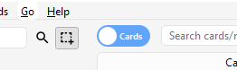
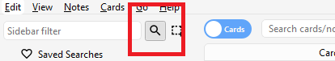
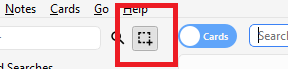
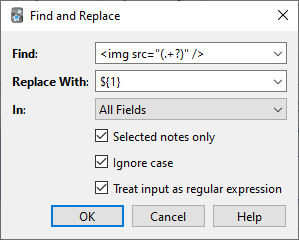

Koʻrib chiqish (Browse)
Browse oynasi kartalaringiz va yozuvlaringiz boʻylab qidirish hamda ularni tahrirlash imkonini beradi. U asosiy oynadagi Browse (Koʻrib chiqish) tugmasini bosish yoki B tugmasini bosish orqali ochiladi. U uch qismdan iborat: chapda yon panel (sidebar), yuqori oʻngda karta/yozuv jadvali va pastki oʻngda tahrirlash maydoni. Sichqonchani ikki qism oʻrtasiga olib borib, bosib sudrasangiz, bir qismni kattalashtirib, ikkinchisini kichraytirish mumkin.
Table Modes (Jadval rejimlari)

Anki 2.1.45+ ikki rejimni taklif qiladi: maʼlumotlar jadvalida yo kartalar, yo yozuvlar koʻrsatiladi. Joriy rejimni qidiruv maydonining chap tomonidagi yuqoridagi almashtirgichni bosib yoki Ctrl+Alt+T yoki Cmd+Opt+T ni bosib oʻzgartirishingiz mumkin. Almashtirgich hozir Cards (Kartalar) yoki Notes (Yozuvlar) koʻrsatilayotganini ham bildiradi.
Eslatma: Soddalik uchun bu qoʻllanma odatda Cards rejimi faol deb hisoblaydi. "Kartalar"ni tanlash/topish va hokazo haqida gap ketganda, oʻquvchi buni "faol rejimga qarab kartalar yoki yozuvlar" deb tushunishi mumkin.
Sidebar (Yon panel)
Chapdagi yon panel keng tarqalgan qidiruv shartlariga tez kirish imkonini beradi. Anki 2.1.45+ da u qidiruv satrini, teglar va toʻplamlarni tahrirlash vositalarini hamda quyidagi boʻlimlarda koʻrib chiqiladigan ikki xil asbobdan birini tanlash imkonini ham beradi. Asboblarni yon panel tepasidagi asboblar paneli yoki Alt+1/2 yorliq tugmalari bilan almashtirishingiz mumkin.
Search Tool (Qidiruv asbobi)

Bu asbob bilan yon panel oldingi versiyalardagidek ishlaydi: elementni bossangiz, shu element boʻyicha qidiriladi.
Bosish paytida Ctrl (Mac’da Command) tugmasini bosib tursangiz, yangi qidiruv boshlash oʻrniga bosilgan element joriy qidiruvga AND (VA) sharti bilan qoʻshiladi. Masalan, nemis toʻplamidagi oʻrganilayotgan kartalarni koʻrsatmoqchi boʻlsangiz, "Learning" ni bosib, keyin "German" ni Ctrl bilan bosishingiz mumkin.
AND oʻrniga OR (YOKI) qidiruvini yaratish uchun Shift tugmasini bosib turishingiz mumkin. Masalan, bitta toʻplamni bosib, keyin boshqasini Shift bilan bossangiz, ikkala toʻplamdagi kartalar bir koʻrinishda chiqadi.
Qidiruvni teskarisiga aylantirish uchun (oldiga - qoʻyish) Alt
(Mac’da Option) ni bosib turishingiz mumkin: masalan, joriy
toʻplamdagi muayyan tegi yoʻq barcha kartalarni koʻrsatish uchun.
Alt/Option ni Ctrl yoki Shift bilan
birga ishlatish mumkin (masalan, Ctrl+Alt bilan bossangiz,
inkor qilingan yangi qidiruv sharti qoʻshiladi).
Anki 2.1.39+ da qidiruv shartini bosayotganda Ctrl va
Shift ni birga bosib tursangiz, bir xil turdagi barcha qidiruvlar
yangisi bilan almashtiriladi. Aytaylik, siz oldin deck:Swahili (is:due or tag:important)
kabi murakkab qidiruv ifodasini yozgan edingiz va endi xuddi shu qidiruvni
urdu toʻplamingiz uchun bajarmoqchisiz. Yon paneldagi Urdu toʻplamini
Ctrl+Shift bilan bossangiz, quyidagi qidiruv ifodasi
hosil boʻladi: deck:Urdu (is:due or tag:important).
Selection Tool (Tanlash asbobi)

Selection asbobi Ctrl yoki Shift tugmasini bosib turib bosish orqali bir vaqtning oʻzida bir nechta elementni tanlash imkonini beradi. Shuningdek, u toʻplamlar va teglar tartibini oʻzgartirish uchun sudrab tashlash (drag-and-drop) ni yoqadi.
Mana misol: sizda Math, Calculus va Algebra teglari bor deylik.
Calculus tegini bosing, keyin Algebra tegini Ctrl bilan bosing.
Endi ikkala teg tanlangan, ulardan istalganini Math tegiga sudrab
tashlasangiz, ikkalasi ham shu tegning farzandi boʻladi. Ichki jarayonda Anki
ikkala tegni mos ravishda Math::Calculus va Math::Algebra deb qayta
nomlaydi va yozuvlaringizni shunga qarab yangilaydi.
Bir nechta elementni tanlashning yana bir qoʻllanilishi — qidiruv: tanlangan elementlar ustida sichqonchaning oʻng tugmasini bossangiz, Search > All/Any Selected (Qidirish > Tanlanganlarning hammasi/istalgani) ni tanlashingiz mumkin. Hosil boʻlgan qidiruvni joriy qidiruvga qoʻshish uchun buni Search Tool da tasvirlangan klaviatura tugmalari bilan birga ishlatish mumkin.
Saved Searches (Saqlangan qidiruvlar)
Bir xil narsani muntazam qidirsangiz, joriy qidiruvni yon paneldagi eng yuqoridagi elementni sichqonchaning oʻng tugmasi bilan bosib, Save Current Search (Joriy qidiruvni saqlash) ni tanlab va nom kiritib saqlashingiz mumkin. Shuningdek, istalgan yon panel elementini shu hududga sudrab tashlab, unga teng saqlangan qidiruv qoʻshishingiz mumkin, bu esa uni amalda eng tepaga mahkamlaydi.
Editing Items (Elementlarni tahrirlash)
Teglar, toʻplamlar va saqlangan qidiruvlarni oʻchirish yoki ularning nomini oʻzgartirishni toʻgʻridan-toʻgʻri yon paneldan, oʻng tugma menyusidan yoki yorliq tugmasi orqali (Windows’da Del va F2) bajarishingiz mumkin. Oʻchirish bir vaqtning oʻzida bir nechta element uchun ham ishlaydi (Selection Tool ga qarang).
Finding Items (Elementlarni topish)
Yon panel daraxtidan biror elementni topish uchun tepadagi qidiruv satriga uning nomining bir qismini yozing.
Search Box (Qidiruv oynasi)
Kartalar roʻyxati ustida qidiruv oynasi bor. Kartalarni qidirish uchun u yerga turli narsalarni yozishingiz mumkin. Qidiruv sintaksisi haqida maʼlumot olish uchun Qidiruv sahifasiga qarang.
Card/Note Table (Karta/yozuv jadvali)
Jadval satrlari joriy qidiruvga mos keladigan kartalar yoki yozuvlarni bildiradi. Qatorni bossangiz, unga mos yozuv pastki qismda koʻrsatiladi.
Rows (Qatorlar)
Bir nechta qatorni tanlash uchun sichqonchani sudrasangiz yoki Ctrl yoki Command ni bosib tursangiz, muharrir vaqtincha yashiriladi. Turli amallar (masalan, toʻplamni oʻzgartirish) faol rejimdan qatʼi nazar, bir vaqtning oʻzida bir nechta karta yoki yozuvda ishlashi mumkin. Shuning uchun Cards rejimida yozuvning istalgan kartasi tanlangan boʻlsa, yozuv tanlangan hisoblanadi, Notes rejimida esa yozuvi tanlangan boʻlsa, karta tanlangan hisoblanadi.
Boshqa amallar (masalan, karta haqida maʼlumotni koʻrsatish) faqat bitta karta yoki yozuvda ishlaydi. Bu joriy karta yoki yozuv deyiladi, odatda u oxirgi tanlangan yoki bosilgan karta/yozuv. Cards rejimida, yana, joriy yozuv joriy kartaning yozuvi, Notes rejimida esa joriy karta joriy yozuvning birinchi kartasi hisoblanadi.
Fon rangi karta va yozuvga qarab oʻzgaradi. Cards rejimida birinchi mos kelgan qoida qoʻllanadi:
- karta belgi qoʻyilgan (flagged) boʻlsa, belgi rangi ishlatiladi,
- karta toʻxtatib qoʻyilgan (suspended) boʻlsa — sariq,
- kartaning yozuvi markalangan (marked) boʻlsa — binafsha.
Notes rejimida rang faqat markalangan yozuvlarga qoʻllanadi.
Markalangan yozuvlar va toʻxtatib qoʻyilgan kartalar haqida koʻproq
maʼlumot uchun Tahrirlash va boshqalar ga qarang.
Columns (Ustunlar)
Ustunlarni sozlash mumkin: qaysi ustunlarni koʻrmoqchi ekaningizni tanlash uchun birining ustida sichqonchaning oʻng tugmasini bosing (Mac’da Ctrl bilan bosing). Ustunlar tartibini sudrab oʻzgartirishingiz mumkin. Ustunni bossangiz, shu ustun boʻyicha saralanadi; saralash tartibini teskari qilish uchun yana bosing. Question va Answer ustunlari boʻyicha saralab boʻlmasligini yodda tuting.
Barcha ustunlar Cards va Notes rejimlari uchun mavjud, lekin baʼzan nomlari va maʼlumotlari biroz boshqacha. Quyidagi jadvalda ikkala rejimdagi xulq keltirilgan.
| Ustun | Cards rejimi | Notes rejimi |
|---|---|---|
| Answer (Javob) | Kartaning orqa tomoni bir qatorda, savol olib tashlangan holda. Buning oʻrniga karta turi muharririda maxsus format ham tanlashingiz mumkin. | Cards rejimidagi kabi, faqat yozuvning birinchi kartasi uchun. |
| Card(s) (Karta(lar)) | Kartaning shabloni nomi. | Yozuvdagi kartalar soni. |
| Card Modified (Karta oʻzgargan vaqt) | Kartaga oxirgi marta oʻzgartirish kiritilgan vaqt (masalan, kartani takrorlaganingizda takrorlash tarixi va interval yangilanganda). | Yozuv kartalaridan biriga oxirgi marta oʻzgartirish kiritilgan vaqt. |
| Created (Yaratilgan) | Notes rejimidagi kabi, kartaning yozuvi uchun. | Yozuv yaratilgan sana. |
| Deck (Toʻplam) | Karta joylashgan toʻplam nomi. | Yozuv kartalari joylashgan turli toʻplamlar soni, yoki barcha kartalar bir toʻplamda boʻlsa, toʻplam nomi. |
| Due (Muddat) | Takrorlash yoki (qayta) oʻrganish bosqichidagi kartalar uchun muddat sanasi, yangi kartalar uchun esa yangi kartalar navbatidagi oʻrni. Karta toʻxtatib qoʻyilgan yoki yashirilgan boʻlsa, satr qavs ichiga olinadi. Saralash avval tur boʻyicha, keyin sana yoki oʻrin boʻyicha amalga oshiriladi. | Yozuvning toʻxtatib qoʻyilmagan, yashirilmagan yoki filtrlangan toʻplamda boʻlmagan, muddati keyingi navbatdagi takrorlash yoki (qayta) oʻrganish kartasining muddat sanasi. |
| (Avg.) Ease ((Oʻrtacha) Ease) | Karta yangi boʻlmasa, uning ease'i. | Yozuvning yangi boʻlmagan kartalari ease'ining oʻrtachasi. |
| (Avg.) Interval ((Oʻrtacha) Interval) | Karta takrorlash yoki qayta oʻrganish bosqichida boʻlsa, uning intervali. | Yozuvning takrorlash yoki qayta oʻrganish bosqichidagi kartalari intervalining oʻrtachasi. |
| Lapses (Unutishlar) | Kartaga necha marta “Again” baho berilgani. | Yozuvning barcha kartalari boʻyicha jami unutishlar. |
| Note (Yozuv) | Notes rejimidagi kabi, kartaning yozuvi uchun. | Yozuvning yozuv turi nomi. |
| Note Modified (Yozuv oʻzgargan vaqt) | Notes rejimidagi kabi, kartaning yozuvi uchun. | Yozuv (masalan, maydon mazmuni) oxirgi marta tahrirlangan vaqt. |
| Question (Savol) | Kartaning old tomoni bir qatorda. Buning oʻrniga karta turi muharririda maxsus format ham tanlashingiz mumkin. | Cards rejimidagi kabi, faqat yozuvning birinchi kartasi uchun. |
| Reviews (Takrorlashlar) | Kartaning necha marta takrorlangani. | Yozuvning barcha kartalari boʻyicha jami takrorlashlar soni. |
| Sort Field (Saralash maydoni) | Notes rejimidagi kabi, kartaning yozuvi uchun. | Yozuv turining saralash maydoni sifatida belgilangan yozuv maydonining mazmuni. Faqat shu bitta maydonni koʻrsatish va u boʻyicha saralash mumkin. Saralash maydonini tahrirlash maydonidagi Fields... (Maydonlar...) ni bosib oʻzgartirishingiz mumkin. |
| Tags (Teglar) | Notes rejimidagi kabi, kartaning yozuvi uchun. | Yozuvning teglari. |
Editing Area (Tahrirlash maydoni)
Pastki oʻng hududda hozir tanlangan qatorning yozuvi koʻrsatiladi. Kartalar va yozuvlar haqida koʻproq maʼlumot uchun Ishni boshlash sahifasiga qarang. Formatlash tugmalari haqida koʻproq maʼlumot uchun Qoʻshish va tahrirlash sahifasiga qarang.
Tahrirlash maydoni tepasidagi Preview (Oldindan koʻrish) tugmasini bosib, hozir tanlangan karta takrorlash paytida qanday koʻrinishini oldindan koʻrishingiz mumkin. Shuni yodda tutingki, bu kartalaringizdagi javobni yozib kiritish (type-the-answer) maydonlarini koʻrsatmaydi, bu kartalarni tez koʻrib chiqishni osonlashtiradi. Notes rejimida oldindan koʻrish tanlangan yozuvning birinchi kartasi uchun koʻrsatiladi.
Menus and Actions (Menyular va amallar)
Browse oynasining yuqorisida turli menyular bilan asboblar paneli bor, ular oʻz navbatida Browse oynasida bajarish mumkin boʻlgan turli amallarni taklif qiladi.
Edit (Tahrirlash)
| Nomi | Amal |
|---|---|
| Undo (Bekor qilish) | Oxirgi bajarilgan amalni bekor qiladi. |
| Select All (Hammasini tanlash) | Koʻrsatilgan barcha qatorlarni tanlaydi. |
| Select Notes (Yozuvlarni tanlash) | Faqat hozir tanlangan yozuvlarni koʻrsatadi va barcha qatorlarni tanlaydi. |
| Invert Selection (Tanlovni teskari qilish) | Tanlanmagan qatorlarni tanlaydi va hozir tanlangan qatorlarni tanlovdan chiqaradi. |
| Create Filtered Deck (Filtrlangan toʻplam yaratish) | Filtrlangan toʻplam oynasini koʻrsatadi va joriy Browse qidiruvini filtr sifatida oʻrnatadi. Ikkinchi filtrni oʻrnatish uchun Alt / Option dan foydalaning. |
Notes (Yozuvlar)
Quyidagi amallarning aksariyati tanlangan yozuvlar ustida ishlaydi. Ular Notes rejimida tanlangan qatorda sichqonchaning oʻng tugmasi bosilganda kontekst menyusi orqali ham mavjud. Cards rejimida ularni kontekst menyusining ichki menyusidan topish mumkin.
| Nomi | Amal |
|---|---|
| Add Notes (Yozuvlar qoʻshish) | Add (Qoʻshish) oynasini ochadi. |
| Create Copy (Nusxa yaratish) | Joriy yozuvning dublikatini muharrirda ochadi. Uni ozgina oʻzgartirib, kartalaringizning variantlarini oson olishingiz mumkin. Standart holatda dublikat karta asl karta bilan bir toʻplamda yaratiladi. |
| Export Notes (Yozuvlarni eksport qilish) | Export (Eksport) oynasini ochadi. |
| Add Tags (Teglar qoʻshish) | Kiritilgan teglarni barcha tanlangan yozuvlarga qoʻshadi. |
| Remove Tags (Teglarni olib tashlash) | Teglarni kiritib, ularni barcha tanlangan yozuvlardan olib tashlaydi. |
| Clear Unused Tags (Ishlatilmayotgan teglarni tozalash) | Yon paneldan hech bir yozuv ishlatmaydigan barcha teglarni olib tashlaydi. |
| Toggle Mark (Markani almashtirish) | Joriy yozuv markalangan boʻlsa (yaʼni Marked tegi bor boʻlsa), barcha tanlangan yozuvlardan markani olib tashlaydi. Joriy yozuv markalanmagan boʻlsa, barcha tanlangan yozuvlarni markalaydi. |
| Change Note Type (Yozuv turini oʻzgartirish) | Tanlangan yozuvlarni bir turdan boshqasiga oʻtkazadi. Masalan, sizda Russian yozuv turi va Computer yozuv turi bor deylik va siz tasodifan Russian yozuvga kompyuterga oid matn kiritib yuborgansiz. Bu xatoni tuzatish uchun shu variantdan foydalanishingiz mumkin. Kartalarning rejalashtirilishiga taʼsir qilmaydi. Yozuv turini oʻzgartirish bir tomonlama sinxronlashni talab qiladi. |
| Find Duplicates (Dublikatlarni topish) | Duplicates (Dublikatlar) oynasini ochadi. |
| Find and Replace (Topish va almashtirish) | Find and Replace oynasini ochadi. |
| Manage Note Types (Yozuv turlarini boshqarish) | Note Types (Yozuv turlari) oynasini ochadi. |
| Delete (Oʻchirish) | Barcha tanlangan yozuvlarni va ularning kartalarini oʻchiradi. Alohida kartalarni olib tashlab boʻlmaydi, chunki alohida kartalar shablonlar bilan boshqariladi. |
Cards (Kartalar)
Quyidagi amallar hozir tanlangan kartalar ustida ishlaydi. Ular Cards rejimida tanlangan qatorda sichqonchaning oʻng tugmasi bosilganda kontekst menyusi orqali ham mavjud. Notes rejimida ularni kontekst menyusining ichki menyusidan topish mumkin.
| Nomi | Amal |
|---|---|
| Change Deck (Toʻplamni oʻzgartirish) | Hozir tanlangan kartalarni boshqa toʻplamga koʻchiradi. |
| Set Due Date (Muddat sanasini belgilash) | Yangi kartalarni takrorlash kartalariga aylantiradi va ularni aniq bir sanaga muddatli qiladi. Oʻqish jadvalingiz uzilib qolganda kartalarni bir necha kunga oldinga yoki orqaga surish uchun foydali boʻlishi mumkin. 60-90 kabi diapazon kiritsangiz, tanlangan kartalar hozirdan 60 dan 90 kungacha oraliqda muddatli boʻladi. Yangi kartalarning intervali ham shu kutishga oʻrnatiladi, takrorlash kartalari esa diapazon oxirida undov belgisi (!) boʻlmasa, joriy intervali oʻzgarmagan holda qayta rejalashtiriladi. Shuni yodda tutingki, kartalarni qoʻlda rejalashtirishda javob berish vaqti qayd etilmaydi, chunki bu amalni takrorlashdan tashqarida ham bajarish mumkin va Anki shu paytda qaysi karta koʻrsatilayotgan yoki koʻrsatilmayotganini bilmaydi. |
| Reset (Tiklash) | Hozir tanlangan kartalarni yangi kartalar navbatining oxiriga koʻchiradi. Mavjud takrorlash tarixi saqlanadi. 2.1.50+ da karta dastlabki oʻrnini tiklash hamda kartaning unutish va takrorlash hisoblagichlarini nolga tushirish variantlari bor. |
| Reposition (Qayta joylashtirish) | Yangi kartalar chiqish tartibini oʻzgartiradi. Mavjud oʻrinlarni yuqoridagi jadval boʻlimida tasvirlanganidek due ustunini yoqib bilib olishingiz mumkin. Reposition buyrugʻini bir nechta karta tanlangan paytda ishga tushirsangiz, u har bir kartaga ketma-ket oshib boruvchi raqamlarni beradi. Standart holatda raqam har bir karta uchun bittadan oshadi, lekin buni "step" (qadam) sozlamasini oʻzgartirib moslashtirish mumkin. Shift position of existing cards (Mavjud kartalar oʻrnini siljitish) variant kartalarni hozirgi kartalar oʻrtasiga qoʻyish va mavjud kartalarni bir-biridan uzoqlashtirish imkonini beradi. Masalan, beshta kartangiz bor va 3, 4 va 5 ni 1 bilan 2 oʻrtasiga koʻchirmoqchisiz. Shu sozlamani tanlasangiz, kartalar 1, 3, 4, 5, 2 tartibida boʻladi. Aksincha, bu variantni oʻchirsangiz, 1 va 2 bir xil oʻrin raqamini oladi (shuning uchun bir xil raqamli kartalardan qaysi biri avval chiqishini oldindan bilib boʻlmaydi). Shuni yodda tutingki, yoqilganda, oʻrni yuqoriroq boʻlgan har qanday karta oʻzgartiriladi va oʻzgargan barcha kartalar keyingi sinxronlashda yuborilishi kerak boʻladi. |
| Toggle Suspend (Toʻxtatib qoʻyishni almashtirish) | Joriy karta toʻxtatib qoʻyilgan yoki qoʻyilmaganiga qarab, barcha tanlangan kartalarni toʻxtatib qoʻyadi yoki toʻxtatishdan chiqaradi. |
| Flag (Belgi) | Barcha tanlangan kartalarning belgilarini almashtiradi. Belgi qoʻshilishi yoki olib tashlanishi joriy kartada tanlangan belgi bor-yoʻqligiga bogʻliq. |
| Info (Maʼlumot) | Joriy karta haqida turli maʼlumotni, jumladan takrorlash tarixini koʻrsatadi. Batafsil maʼlumot uchun Karta haqida maʼlumot ga qarang. |
Go (Oʻtish)
Bu menyu Browse oynasining turli qismlariga oʻtish va karta roʻyxati boʻylab yuqoriga-pastga yurish uchun klaviatura yorliqlarini taqdim etadi.
Find and Replace (Topish va almashtirish)
Bu oyna yozuvlardagi matnni almashtirish imkonini beradi. Yuqorida tasvirlanganidek, u asboblar panelidan va jadvalning kontekst menyusidan mavjud.
Birinchi kiritish maydoni almashtiriladigan matn uchun, ikkinchisi esa almashtiruvchi matn uchun. Keyin ochiladigan menyu bor, u Anki almashtirish uchun matnni qayerdan qidirishini belgilash imkonini beradi: yozuvning teglarida (Anki 2.1.45+ kerak), barcha maydonlarda yoki faqat muayyan maydonda (faqat tanlangan yozuvga tegishli maydonlar roʻyxatda koʻrsatiladi).
Standart holatda faqat tanlangan yozuvlarga taʼsir qilinadi. Bu cheklovni olib tashlamoqchi boʻlsangiz, "selected notes only" (faqat tanlangan yozuvlar) belgisini olib tashlashingiz mumkin (Anki 2.1.45+ kerak).
Regular expression (muntazam ifoda) varianti murakkab almashtirishlarni bajarish imkonini beradi. Masalan, maydonda quyidagi matn bor deylik:
<img src="pic.jpg" />
Biz quyidagi sozlamalardan foydalanamiz:

(Eslatma: Anki 2.1.28 dan oldingi versiyalarda ${1} ni \1 bilan
almashtirishingiz kerak boʻlardi.)
Shunda taxmin qilingan maydon mazmuni quyidagiga oʻzgaradi:
pic.jpg
Muntazam ifodalar haqida toʻliq muhokama bu hujjat doirasidan tashqarida. Internetda bir qancha sintaksis qoʻllanmalari mavjud:
- Anki 2.1.28+ uchun https://docs.rs/regex/latest/regex/index.html#syntax ga qarang.
- Eskiroq Anki versiyalari uchun http://docs.python.org/library/re.html ga qarang.
Finding Duplicates (Dublikatlarni topish)
Bir xil mazmundagi yozuvlarni qidirish uchun Notes > Find Duplicates (Yozuvlar > Dublikatlarni topish) variantidan foydalanishingiz mumkin. Oynani ochganingizda Anki barcha yozuv turlaringizni koʻrib chiqadi va barcha mumkin boʻlgan maydonlar roʻyxatini koʻrsatadi. Back maydonidagi dublikatlarni qidirmoqchi boʻlsangiz, uni roʻyxatdan tanlab, keyin Search (Qidirish) ni bosasiz.
Standart holatda u siz koʻrsatgan maydonga ega barcha yozuv turlaridan qidiradi. Bu kartalarni qoʻlda qoʻshganingizdagi dublikat tekshiruvidan farq qiladi, u bitta yozuv turi bilan cheklangan.
Optional filter (Ixtiyoriy filtr) matn maydoni Anki dublikatlarni qayerdan qidirishini toraytirish imkonini beradi. Dublikatlarni faqat "French Vocab" va "French Verbs" yozuv turlaridan qidirmoqchi boʻlsangiz, quyidagini kiritasiz:
"note:french vocab" or "note:french verbs"
Yoki dublikatlarni faqat muayyan toʻplamdan qidirmoqchi boʻlishingiz mumkin, shunda quyidagidan foydalanishingiz mumkin:
"deck:myDeck"
Qidiruv sintaksisi Browse oynasida qidirishdagi bilan bir xil. Batafsil maʼlumot uchun Qidiruv sahifasiga qarang.
Shu toʻplamdagi dublikat yozuvlarni koʻrsatish uchun qidiruv natijalari roʻyxatidagi havolalardan birini bosishingiz mumkin. Qidiruv juda koʻp dublikat chiqarsa, oʻrniga Tag Duplicates (Dublikatlarni teglash) tugmasini bosishni xohlashingiz mumkin, u barcha mos yozuvlarni duplicate tegi bilan belgilaydi. Keyin Browse oynasida shu tegni qidirib, hammasini bir ekrandan boshqarishingiz mumkin.